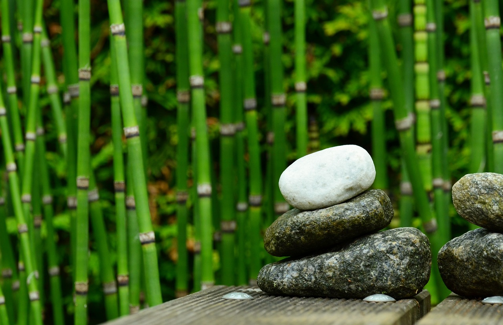

Bamboo, a versatile and fast-growing plant, symbolizes resilience and sustainability in nature. With its strong yet flexible stalks and rapid regrowth, bamboo serves as a renewable resource for various purposes while contributing to ecological balance.
In the heart of lush forests and amidst the gentle whispers of nature, there stands a remarkable plant that has captured the awe and admiration of humans for centuries - bamboo. With its remarkable versatility, eco-friendliness, and undeniable charm, bamboo is not just a plant; it's a symbol of resilience, sustainability, and the harmonious relationship between humans and the natural world. Let's take a deep dive into the world of bamboo, exploring its fascinating characteristics, diverse uses, and the invaluable role it plays in our lives and the environment.
Bamboo, belonging to the grass family (Poaceae), is a marvel of nature that has evolved over millions of years to become one of the most adaptable and resilient plants on Earth. With over 1,500 species found across diverse climates and landscapes, bamboo has proven itself to be a survivor, thriving in environments ranging from tropical rainforests to high-altitude mountains. One of the most remarkable features of bamboo is its astonishing growth rate. Some species of bamboo can grow up to 91 centimeters (36 inches) in a single day, earning it the reputation of being one of the fastest-growing plants in the world. This rapid growth not only makes bamboo a highly renewable resource but also a symbol of vitality and abundance in nature.
Bamboo's versatility knows no bounds, with its utility extending across a wide range of applications. From construction to cuisine, and from textiles to technology, bamboo has found its way into every aspect of human life, enriching it with its myriad benefits. In the realm of construction, bamboo reigns supreme as a sustainable alternative to traditional building materials. Its exceptional strength-to-weight ratio and natural durability make it an ideal choice for structural elements such as beams, columns, and flooring. Bamboo's flexibility allows for creative architectural designs, while its aesthetic appeal adds a touch of natural elegance to any structure. But bamboo's utility doesn't end there. In the world of design and craftsmanship, bamboo takes center stage, with artisans harnessing its beauty and versatility to create exquisite furniture, decorative items, and even ordinary products like tables, towels, pillows, and clothes. Its smooth texture, vibrant colors, and graceful curves make bamboo a favorite among designers and creators seeking to infuse their creations with a touch of natural beauty.
In an age where environmental sustainability is of paramount importance, bamboo emerges as a shining beacon of hope. As a highly renewable and fast-growing plant, bamboo offers a sustainable solution to many of the environmental challenges we face today. Unlike traditional timber, which can take decades to mature, bamboo can be harvested every few years without causing long-term damage to the environment. Its extensive root system helps prevent soil erosion and promotes soil stability, making it a valuable ally in land conservation efforts. Moreover, bamboo cultivation requires minimal chemical inputs such as pesticides and fertilizers, reducing the environmental impact compared to other crops. As a carbon-neutral material, bamboo absorbs carbon dioxide from the atmosphere and stores it in its biomass, helping to mitigate climate change and reduce greenhouse gas emissions. This is why some bamboo products are better to use and sometimes easier to clean.
As we marvel at the wonders of bamboo and bask in its warmth and beauty, let us not forget our responsibility to protect and preserve it for future generations. Each bamboo shoot that sways gently in the breeze is a testament to the resilience and adaptability of nature, but it is also a reminder of the delicate balance that sustains life on Earth. Through sustainable harvesting practices, reforestation efforts, and raising awareness about the importance of bamboo conservation, we can ensure that these magnificent forests continue to thrive for generations to come. Let us embrace bamboo not just as a plant, but as a symbol of our commitment to living in harmony with nature and treading lightly on this precious planet we call home. In conclusion, bamboo is more than just a plant; it's a source of inspiration, a symbol of resilience, and a beacon of hope in an ever-changing world. Let us embrace the beauty and versatility of bamboo, and together, let us forge a brighter, greener future for all.